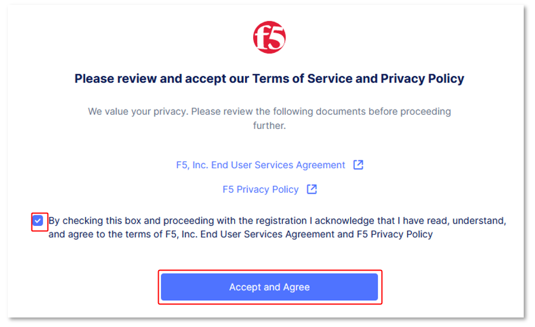
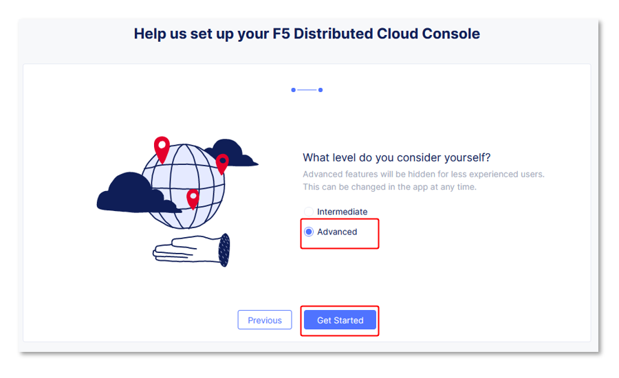
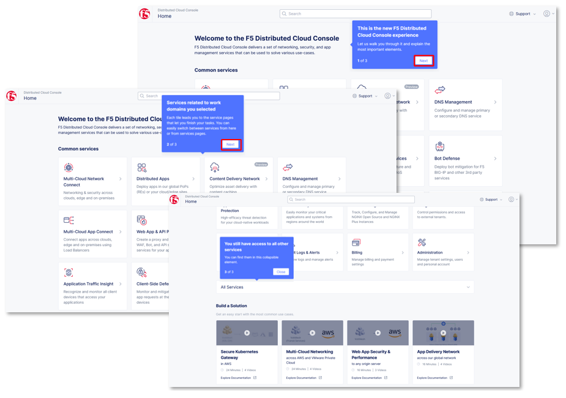
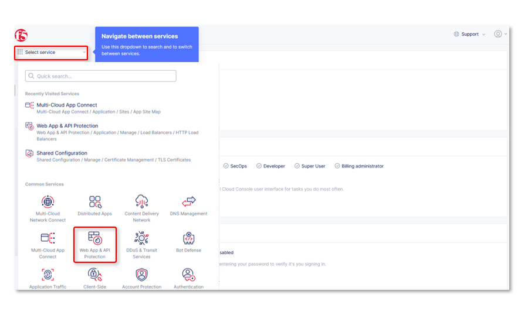

F5 Distributed Cloud > Two (2) Hour F5 Distributed Cloud Labs > F5 Distributed Cloud - WAF/WAAP Deeper Dive 2 hour Source | Edit on
Introduction: Accessing F5 Distributed Cloud Console¶
Welcome to this F5 Distributed Cloud Lab. The following tasks will guide you through the initial access requirements for this multi-part lab. Lab attendees should have received an invitation (which requests you update your password for access) email to the lab environment. Please check the email address used for course registration and its associated spam folders to see if the invitation email has been received. If you have not received an email, please contact a member of the lab team.
The F5 Distributed Cloud Console, where a majority of all lab tasks will be conducted, is a SaaS based control-plane for services which provides a GUI and API for managing network, security, and compute services. The F5 Distributed Cloud Console can manage “sites” in existing on-premises, private data centers and sites within AWS, Azure, and GCP public cloud environments.
Task 1: Lab Environment¶
The image below represents an overview of the lab environment. F5 Distributed Cloud Services will be configured as a SaaS Edge delivery and security service tier to a publicly hosted web application. The key elements lab attendees will interact with are as follows:
|
 |
Task 2: F5 Distributed Cloud Console Login¶
The following will guide you through the initial Lab environment access within the F5 Distributed Cloud Console. You should have received an email with an invitation to access a F5 Distributed Cloud Tenant. The email will come from no-reply@cloud.f5.com.
The name of the F5 Distributed Cloud tenant that we will be using for this lab is f5-xc-lab-sec Additionally, the following are key configuration elements for this lab and will be used throughout the lab tasks that follow.
- F5 Distributed Cloud Console: https://f5-xc-lab-sec.console.ves.volterra.io/
- Delegated Domain: lab-sec.f5demos.com
After following the invitation email’s instructions to Update Password, proceed to the first step below to access the F5 Distributed Cloud Lab Tenant.
If you have logged into the F5 Distributed Cloud Console, you will need to clear your browser cache or open within a Private browser session.
|
|  |
 |
|  |
|  |
{kind=link}
{kind=link}
{kind=link}
Note For the purposes of this lab, permissions have been restricted to lab operations. As some menus will be locked and not visible. |
 |
 |
Note Administratively, there are other ways to find namespaces. Due to access and permission restrictions for this particular lab, those menus are not available. |
|  |
 |
{kind=link}
| Beginning of Lab: You are now ready to begin the lab, Enjoy! Ask questions as needed. |
 |